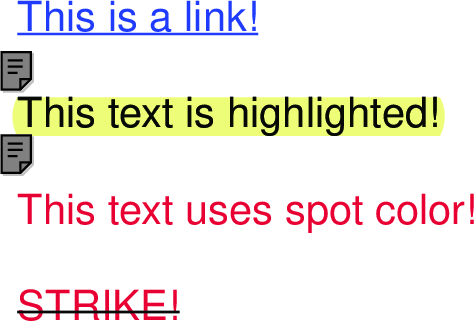

Annotations in PDFKit
Annotations are interactive features of the PDF format, and they make it possible to include things like links and attached notes, or to highlight, underline or strikeout portions of text. Annotations are added using the various helper methods, and each type of annotation is defined by a rectangle and some other properties. Here is a list of the available annotation methods:
note(x, y, width, height, contents, options)link(x, y, width, height, url, options)highlight(x, y, width, height, options)underline(x, y, width, height, options)strike(x, y, width, height, options)lineAnnotation(x1, y1, x2, y2, options)rectAnnotation(x, y, width, height, options)ellipseAnnotation(x, y, width, height, options)textAnnotation(x, y, width, height, text, options)
Many of the annotations have a color option that you can specify. You can
use an array of RGB values, a hex color, or a named CSS color value for that
option.
If you are adding an annotation to a piece of text, such as a link or
underline, you will need to know the width and height of the text in order to
create the required rectangle for the annotation. There are two methods that
you can use to do that. To get the width of any piece of text in the current
font, just call the widthOfString method with the string you want to
measure. To get the line height in the current font, just call the
currentLineHeight method.
You must remember that annotations have a stacking order. If you are putting more than one annotation on a single area and one of those annotations is a link, make sure that the link is the last one you add, otherwise it will be covered by another annotation and the user won't be able to click it.
Here is an example that uses a few of the annotation types.
# Add the link text
doc.fontSize(25)
.fillColor('blue')
.text('This is a link!', 20, 0)
# Measure the text
width = doc.widthOfString('This is a link!')
height = doc.currentLineHeight()
# Add the underline and link annotations
doc.underline(20, 0, width, height, color: 'blue')
.link(20, 0, width, height, 'http://google.com/')
# Create the highlighted text
doc.moveDown()
.fillColor('black')
.highlight(20, doc.y, doc.widthOfString('This text is highlighted!'), height)
.text('This text is highlighted!')
# Create the crossed out text
doc.moveDown()
.strike(20, doc.y, doc.widthOfString('STRIKE!'), height)
.text('STRIKE!')The output of this example looks like this.

Annotations are currently not the easiest things to add to PDF documents, but that is the fault of the PDF spec itself. Calculating a rectangle manually isn't fun, but PDFKit makes it easier for a few common annotations applied to text, including links, underlines, and strikes. Here's an example showing two of them:
doc.fontSize 20
.fillColor 'red'
.text 'Another link!', 20, 0,
link: 'http://apple.com/',
underline: trueThe output is as you'd expect:

You made it!
That's all there is to creating PDF documents in PDFKit. It's really quite simple to create beautiful multi-page printable documents using Node.js!
This guide was actually generated from Markdown/Literate CoffeeScript files using a PDFKit generation script. The examples are actually run to generate the output shown inline. The script generates both the website and the PDF guide, and can be found on Github. Check it out if you want to see an example of a slightly more complicated renderer using a parser for Markdown and a syntax highlighter.
If you have any questions about what you've learned in this guide, please don't hesitate to ask the author or post an issue on Github. Enjoy!